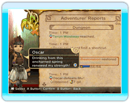

● Voglio stare in giro più a lungo, ma Chime mi mette a nanna!
 Se innalzi il livello del morale e le famiglie sono felici, queste sistemeranno dei lampioni vicino alle loro porte, permettendoti di stare a zonzo più tardi la notte.
Se innalzi il livello del morale e le famiglie sono felici, queste sistemeranno dei lampioni vicino alle loro porte, permettendoti di stare a zonzo più tardi la notte.
● Che cosa sono le vendite speciali?
Quando i guadagni dei negozi raggiungono un certo livello, i mercanti organizzeranno gli "special sales day" per mettere in vendita oggetti speciali. Durante questi giorni i negozi che attivano le vendite speciali illumineranno le entrate con delle decorazioni.
● Cosa sono le holiday (vacanze)?
Le vacanze consentono agli avventurieri di prendere un po' di pausa dall'esplorazione dei dungeon. Quelli stanchi possono rimanere a casa a riposarsi per poter poi tornare all'opera il giorno seguente carichi di energia. In queste occasioni il re indossa l'abito della festa e le reazioni dei cittadini variano di conseguenza.

Attenzione: nei giorni di festa non possono essere affissi ordini.
● Vorrei costruire altri edifici, ma non ho elementite a sufficienza!
Assicurati di includere un ladro con l'abilità Keen Eyes (Occhio vigile) nella tua squadra di avventurieri. Questa abilità aumenterà vertiginosamente la quantità di elementite trovata nei dungeon. Ricorda che è necessario costruire una Gaming Hall (Sala da gioco) per poter trasformare un avventuriero in thief (ladro).
● Mi servono più gil!
I tuoi guadagni dipendono dal numero di abitanti del regno, le ville ti consentiranno di avere più sudditi rispetto alle casette. Ricorda che le famiglie felici sono ben disposte a elargire laute decime al proprio re.
● Come posso aumentare il numero degli avventurieri?
Sviluppa il tuo regno e avrai accesso alle Guild Halls (Sale delle gilde). Se finanzierai una sala delle gilde, potrai innalzare il numero degli avventurieri che puoi approvare.
● È impossibile portare a termine questo dungeon!
Leggi con cura le informazioni degli avventurieri. Potrebbero celare informazioni su come completare le missioni.

Se a crearti problemi è il boss del dungeon, cerca di esplorare con più attenzione la zona della missione. Le scorciatoie e le fontane di recupero presenti nei dungeon ti permettono di affrontare un boss in condizioni migliori.